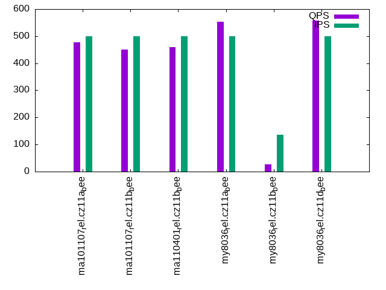

Introduction
This is a report for the insert benchmark with 800M docs and 1 client(s). It is generated by scripts (bash, awk, sed) and Tufte might not be impressed. An overview of the insert benchmark is here and a short update is here. Below, by DBMS, I mean DBMS+version.config. An example is my8020.c10b40 where my means MySQL, 8020 is version 8.0.20 and c10b40 is the name for the configuration file.
The test server has 8 AMD cores, 16G RAM and an NVMe SSD. It is described here as the Beelink. The benchmark was run with 1 client and there were 1 or 3 connections per client (1 for queries or inserts without rate limits, 1+1 for rate limited inserts+deletes). It uses 1 table. It loads 800M rows per table without secondary indexes, creates 3 secondary indexes per table, then inserts 4m+1m rows per table with a delete per insert to avoid growing the table. It then does 6 read+write tests for 1800s each that do queries as fast as possible with 100,100,500,500,1000,1000 inserts/s and the same for deletes/s per client concurrent with the queries. The database is larger than memory. Clients and the DBMS share one server. The per-database configs are in the per-database subdirectories here.
The tested DBMS are:
- ma101107_rel.cz11a_bee - MariaDB 10.11.7 with the cz11a_bee config
- ma101107_rel.cz11b_bee - MariaDB 10.11.7 with the cz11b_bee config that uses innodb_flush_method=O_DIRECT
- ma110401_rel.cz11b_bee - MariaDB 11.4.1 with the cz11b_bee config that uses innodb_flush_method=O_DIRECT
- my8036_rel.cz11a_bee - MySQL 8.0.36 with the cz11a_bee config
- my8036_rel.cz11b_bee - MySQL 8.0.36 with the cz11b_bee config that uses innodb_flush_method=O_DIRECT
- my8036_rel.cz11d_bee - MySQL 8.0.36 with the cz11b_bee config that uses innodb_flush_method=O_DIRECT and innodb_change_buffering=none
Contents
- Summary
- l.i0: load without secondary indexes
- l.x: create secondary indexes
- l.i1: continue load after secondary indexes created with 50 inserts per transaction
- l.i2: continue load after secondary indexes created with 5 inserts per transaction
- qr100.L1: range queries with 100 insert/s per client
- qp100.L2: point queries with 100 insert/s per client
- qr500.L3: range queries with 500 insert/s per client
- qp500.L4: point queries with 500 insert/s per client
- qr1000.L5: range queries with 1000 insert/s per client
- qp1000.L6: point queries with 1000 insert/s per client
Summary
The numbers are inserts/s for l.i0, l.i1 and l.i2, indexed docs (or rows) /s for l.x and queries/s for qr100, qp100 thru qr1000, qp1000" The values are the average rate over the entire test for inserts (IPS) and queries (QPS). The range of values for IPS and QPS is split into 3 parts: bottom 25%, middle 50%, top 25%. Values in the bottom 25% have a red background, values in the top 25% have a green background and values in the middle have no color. A gray background is used for values that can be ignored because the DBMS did not sustain the target insert rate. Red backgrounds are not used when the minimum value is within 80% of the max value.
| dbms | l.i0 | l.x | l.i1 | l.i2 | qr100 | qp100 | qr500 | qp500 | qr1000 | qp1000 |
|---|---|---|---|---|---|---|---|---|---|---|
| ma101107_rel.cz11a_bee | 78194 | 98888 | 1070 | 1167 | 3355 | 588 | 3148 | 478 | 2822 | 391 |
| ma101107_rel.cz11b_bee | 77768 | 98765 | 961 | 1027 | 3326 | 579 | 3074 | 450 | 2500 | 354 |
| ma110401_rel.cz11b_bee | 76431 | 97931 | 978 | 1081 | 3393 | 579 | 3098 | 460 | 2584 | 367 |
| my8036_rel.cz11a_bee | 55559 | 104657 | 1715 | 1855 | 3694 | 616 | 3891 | 554 | 4033 | 514 |
| my8036_rel.cz11b_bee | 54663 | 51533 | 94 | 102 | 2141 | 29 | 2103 | 26 | 1672 | 25 |
| my8036_rel.cz11d_bee | 55811 | 106256 | 1450 | 1575 | 3736 | 610 | 3929 | 557 | 4066 | 515 |
This table has relative throughput, throughput for the DBMS relative to the DBMS in the first line, using the absolute throughput from the previous table. Values less than 0.95 have a yellow background. Values greater than 1.05 have a blue background.
| dbms | l.i0 | l.x | l.i1 | l.i2 | qr100 | qp100 | qr500 | qp500 | qr1000 | qp1000 |
|---|---|---|---|---|---|---|---|---|---|---|
| ma101107_rel.cz11a_bee | 1.00 | 1.00 | 1.00 | 1.00 | 1.00 | 1.00 | 1.00 | 1.00 | 1.00 | 1.00 |
| ma101107_rel.cz11b_bee | 0.99 | 1.00 | 0.90 | 0.88 | 0.99 | 0.98 | 0.98 | 0.94 | 0.89 | 0.91 |
| ma110401_rel.cz11b_bee | 0.98 | 0.99 | 0.91 | 0.93 | 1.01 | 0.98 | 0.98 | 0.96 | 0.92 | 0.94 |
| my8036_rel.cz11a_bee | 0.71 | 1.06 | 1.60 | 1.59 | 1.10 | 1.05 | 1.24 | 1.16 | 1.43 | 1.31 |
| my8036_rel.cz11b_bee | 0.70 | 0.52 | 0.09 | 0.09 | 0.64 | 0.05 | 0.67 | 0.05 | 0.59 | 0.06 |
| my8036_rel.cz11d_bee | 0.71 | 1.07 | 1.36 | 1.35 | 1.11 | 1.04 | 1.25 | 1.17 | 1.44 | 1.32 |
This lists the average rate of inserts/s for the tests that do inserts concurrent with queries. For such tests the query rate is listed in the table above. The read+write tests are setup so that the insert rate should match the target rate every second. Cells that are not at least 95% of the target have a red background to indicate a failure to satisfy the target.
| dbms | qr100.L1 | qp100.L2 | qr500.L3 | qp500.L4 | qr1000.L5 | qp1000.L6 |
|---|---|---|---|---|---|---|
| ma101107_rel.cz11a_bee | 100 | 100 | 499 | 499 | 999 | 998 |
| ma101107_rel.cz11b_bee | 100 | 100 | 499 | 499 | 999 | 999 |
| ma110401_rel.cz11b_bee | 100 | 100 | 499 | 499 | 999 | 999 |
| my8036_rel.cz11a_bee | 100 | 100 | 499 | 499 | 998 | 999 |
| my8036_rel.cz11b_bee | 99 | 99 | 104 | 136 | 132 | 173 |
| my8036_rel.cz11d_bee | 100 | 100 | 499 | 499 | 998 | 998 |
| target | 100 | 100 | 500 | 500 | 1000 | 1000 |
l.i0
l.i0: load without secondary indexes. Graphs for performance per 1-second interval are here.
Average throughput:
Insert response time histogram: each cell has the percentage of responses that take <= the time in the header and max is the max response time in seconds. For the max column values in the top 25% of the range have a red background and in the bottom 25% of the range have a green background. The red background is not used when the min value is within 80% of the max value.
| dbms | 256us | 1ms | 4ms | 16ms | 64ms | 256ms | 1s | 4s | 16s | gt | max |
|---|---|---|---|---|---|---|---|---|---|---|---|
| ma101107_rel.cz11a_bee | 0.743 | 99.006 | 0.201 | 0.046 | 0.004 | 0.210 | |||||
| ma101107_rel.cz11b_bee | 0.612 | 99.129 | 0.214 | 0.040 | 0.005 | 0.236 | |||||
| ma110401_rel.cz11b_bee | 0.195 | 99.544 | 0.216 | 0.040 | 0.005 | 0.198 | |||||
| my8036_rel.cz11a_bee | 99.423 | 0.431 | 0.145 | 0.001 | 0.105 | ||||||
| my8036_rel.cz11b_bee | 99.391 | 0.461 | 0.147 | 0.001 | 0.106 | ||||||
| my8036_rel.cz11d_bee | 99.423 | 0.440 | 0.136 | 0.001 | 0.098 |
Performance metrics for the DBMS listed above. Some are normalized by throughput, others are not. Legend for results is here.
ips qps rps rmbps wps wmbps rpq rkbpq wpi wkbpi csps cpups cspq cpupq dbgb1 dbgb2 rss maxop p50 p99 tag 78194 0 600 2.3 388.5 22.9 0.008 0.031 0.005 0.300 11954 25.6 0.153 26 52.6 68.4 10.3 0.210 78313 68622 ma101107_rel.cz11a_bee 77768 0 597 2.3 392.1 22.7 0.008 0.031 0.005 0.300 11935 25.6 0.153 26 52.6 68.4 10.3 0.236 77954 67823 ma101107_rel.cz11b_bee 76431 0 585 2.3 385.5 22.4 0.008 0.031 0.005 0.300 12003 25.5 0.157 27 52.6 68.4 10.3 0.198 76515 66726 ma110401_rel.cz11b_bee 55559 0 0 0.0 338.7 21.0 0.000 0.000 0.006 0.388 6659 20.5 0.120 30 52.4 68.0 11.1 0.105 55637 51740 my8036_rel.cz11a_bee 54663 0 0 0.0 384.0 20.7 0.000 0.000 0.007 0.389 6999 21.9 0.128 32 52.4 68.0 11.1 0.106 54766 49831 my8036_rel.cz11b_bee 55811 0 0 0.0 340.3 21.1 0.000 0.000 0.006 0.388 6691 20.8 0.120 30 52.4 68.0 11.1 0.098 55838 52444 my8036_rel.cz11d_bee
l.x
l.x: create secondary indexes.
Average throughput:
Performance metrics for the DBMS listed above. Some are normalized by throughput, others are not. Legend for results is here.
ips qps rps rmbps wps wmbps rpq rkbpq wpi wkbpi csps cpups cspq cpupq dbgb1 dbgb2 rss maxop p50 p99 tag 98888 0 632 99.9 730.6 111.1 0.006 1.034 0.007 1.151 3320 11.9 0.034 10 119.9 135.7 10.3 0.002 NA NA ma101107_rel.cz11a_bee 98765 0 634 99.8 727.6 111.0 0.006 1.035 0.007 1.151 3343 11.9 0.034 10 119.9 135.7 10.3 0.002 NA NA ma101107_rel.cz11b_bee 97931 0 630 98.9 718.3 110.0 0.006 1.035 0.007 1.150 3284 11.9 0.034 10 119.9 135.7 10.3 0.003 NA NA ma110401_rel.cz11b_bee 104657 0 1759 166.5 2132.7 149.7 0.017 1.629 0.020 1.465 8548 44.1 0.082 34 120.7 136.3 11.2 0.005 NA NA my8036_rel.cz11a_bee 51533 0 865 82.0 1142.0 73.8 0.017 1.629 0.022 1.467 4238 24.7 0.082 38 120.7 136.3 11.2 0.004 NA NA my8036_rel.cz11b_bee 106256 0 1783 169.1 2168.6 152.1 0.017 1.629 0.020 1.465 8771 45.0 0.083 34 120.7 136.3 11.2 0.004 NA NA my8036_rel.cz11d_bee
l.i1
l.i1: continue load after secondary indexes created with 50 inserts per transaction. Graphs for performance per 1-second interval are here.
Average throughput:
Insert response time histogram: each cell has the percentage of responses that take <= the time in the header and max is the max response time in seconds. For the max column values in the top 25% of the range have a red background and in the bottom 25% of the range have a green background. The red background is not used when the min value is within 80% of the max value.
| dbms | 256us | 1ms | 4ms | 16ms | 64ms | 256ms | 1s | 4s | 16s | gt | max |
|---|---|---|---|---|---|---|---|---|---|---|---|
| ma101107_rel.cz11a_bee | 84.365 | 15.629 | 0.005 | 0.001 | 3.772 | ||||||
| ma101107_rel.cz11b_bee | 77.414 | 22.541 | 0.044 | 0.001 | 4.085 | ||||||
| ma110401_rel.cz11b_bee | 77.763 | 22.236 | 0.001 | 4.258 | |||||||
| my8036_rel.cz11a_bee | 17.226 | 77.665 | 5.109 | 0.221 | |||||||
| my8036_rel.cz11b_bee | 0.001 | 12.666 | 37.305 | 33.399 | 16.628 | 0.001 | 4.160 | ||||
| my8036_rel.cz11d_bee | 0.020 | 93.076 | 6.904 | 0.201 |
Delete response time histogram: each cell has the percentage of responses that take <= the time in the header and max is the max response time in seconds. For the max column values in the top 25% of the range have a red background and in the bottom 25% of the range have a green background. The red background is not used when the min value is within 80% of the max value.
| dbms | 256us | 1ms | 4ms | 16ms | 64ms | 256ms | 1s | 4s | 16s | gt | max |
|---|---|---|---|---|---|---|---|---|---|---|---|
| ma101107_rel.cz11a_bee | 4.051 | 85.021 | 10.926 | 0.001 | 3.712 | ||||||
| ma101107_rel.cz11b_bee | 3.084 | 88.833 | 8.066 | 0.016 | 0.001 | 4.021 | |||||
| ma110401_rel.cz11b_bee | 3.148 | 89.179 | 7.673 | 0.001 | 4.147 | ||||||
| my8036_rel.cz11a_bee | 51.446 | 48.204 | 0.347 | 0.003 | 0.096 | ||||||
| my8036_rel.cz11b_bee | 49.480 | 11.056 | 16.476 | 22.940 | 0.039 | 0.009 | 1.388 | ||||
| my8036_rel.cz11d_bee | 81.332 | 16.731 | 1.936 | 0.166 |
Performance metrics for the DBMS listed above. Some are normalized by throughput, others are not. Legend for results is here.
ips qps rps rmbps wps wmbps rpq rkbpq wpi wkbpi csps cpups cspq cpupq dbgb1 dbgb2 rss maxop p50 p99 tag 1070 0 6860 106.5 6305.4 186.7 6.412 101.951 5.894 178.714 60663 11.8 56.705 882 144.4 160.2 10.1 3.772 1099 749 ma101107_rel.cz11a_bee 961 0 6153 95.6 5812.3 169.3 6.404 101.838 6.049 180.481 54631 10.4 56.860 866 144.4 160.2 10.1 4.085 949 550 ma101107_rel.cz11b_bee 978 0 6296 97.8 5847.9 169.9 6.439 102.390 5.980 177.928 55315 10.6 56.565 867 144.4 160.2 10.1 4.258 949 599 ma110401_rel.cz11b_bee 1715 0 8853 138.3 13267.1 368.2 5.162 82.587 7.735 219.837 74754 23.6 43.584 1101 149.5 165.3 10.8 0.221 1648 899 my8036_rel.cz11a_bee 94 0 594 9.3 1050.5 23.7 6.298 100.771 11.140 257.803 25297 6.0 268.256 5090 143.9 159.5 10.8 4.160 50 0 my8036_rel.cz11b_bee 1450 0 9139 142.8 13289.5 363.1 6.304 100.858 9.166 256.468 70515 21.2 48.638 1170 143.9 159.5 10.7 0.201 1498 949 my8036_rel.cz11d_bee
l.i2
l.i2: continue load after secondary indexes created with 5 inserts per transaction. Graphs for performance per 1-second interval are here.
Average throughput:

Insert response time histogram: each cell has the percentage of responses that take <= the time in the header and max is the max response time in seconds. For the max column values in the top 25% of the range have a red background and in the bottom 25% of the range have a green background. The red background is not used when the min value is within 80% of the max value.
| dbms | 256us | 1ms | 4ms | 16ms | 64ms | 256ms | 1s | 4s | 16s | gt | max |
|---|---|---|---|---|---|---|---|---|---|---|---|
| ma101107_rel.cz11a_bee | 0.001 | 89.945 | 8.538 | 0.428 | 1.088 | 0.141 | |||||
| ma101107_rel.cz11b_bee | 0.001 | 70.451 | 27.595 | 1.073 | 0.881 | 0.142 | |||||
| ma110401_rel.cz11b_bee | 0.003 | 68.868 | 29.822 | 0.546 | 0.762 | 0.155 | |||||
| my8036_rel.cz11a_bee | 3.010 | 90.628 | 5.804 | 0.557 | 0.059 | ||||||
| my8036_rel.cz11b_bee | 0.402 | 23.755 | 13.065 | 33.832 | 27.488 | 1.459 | 0.813 | ||||
| my8036_rel.cz11d_bee | 0.001 | 93.521 | 5.389 | 1.085 | 0.003 | 0.088 |
Delete response time histogram: each cell has the percentage of responses that take <= the time in the header and max is the max response time in seconds. For the max column values in the top 25% of the range have a red background and in the bottom 25% of the range have a green background. The red background is not used when the min value is within 80% of the max value.
| dbms | 256us | 1ms | 4ms | 16ms | 64ms | 256ms | 1s | 4s | 16s | gt | max |
|---|---|---|---|---|---|---|---|---|---|---|---|
| ma101107_rel.cz11a_bee | 0.014 | 93.919 | 4.939 | 0.129 | 1.000 | 0.140 | |||||
| ma101107_rel.cz11b_bee | 0.011 | 79.046 | 19.293 | 0.889 | 0.761 | 0.139 | |||||
| ma110401_rel.cz11b_bee | 0.009 | 77.700 | 21.218 | 0.376 | 0.697 | 0.155 | |||||
| my8036_rel.cz11a_bee | 25.944 | 73.442 | 0.575 | 0.039 | 0.049 | ||||||
| my8036_rel.cz11b_bee | 38.341 | 26.948 | 20.459 | 14.006 | 0.239 | 0.005 | 0.001 | 1.020 | |||
| my8036_rel.cz11d_bee | 0.005 | 94.781 | 4.729 | 0.483 | 0.001 | 0.069 |
Performance metrics for the DBMS listed above. Some are normalized by throughput, others are not. Legend for results is here.
ips qps rps rmbps wps wmbps rpq rkbpq wpi wkbpi csps cpups cspq cpupq dbgb1 dbgb2 rss maxop p50 p99 tag 1167 0 7189 108.2 6038.7 182.6 6.161 94.946 5.175 160.232 63665 14.8 54.564 1015 144.4 160.2 10.1 0.141 1174 989 ma101107_rel.cz11a_bee 1027 0 6327 95.2 5388.9 159.2 6.163 94.924 5.249 158.748 55896 13.0 54.448 1013 144.4 160.2 10.1 0.142 1069 459 ma101107_rel.cz11b_bee 1081 0 6696 100.7 5725.4 168.1 6.194 95.414 5.296 159.190 59109 13.4 54.680 992 144.4 160.2 10.1 0.155 1094 799 ma110401_rel.cz11b_bee 1855 0 8058 125.9 11848.7 316.6 4.343 69.495 6.387 174.754 78360 32.2 42.238 1389 149.5 165.4 10.8 0.059 1839 1478 my8036_rel.cz11a_bee 102 0 639 10.0 1094.1 24.0 6.261 100.182 10.726 241.267 30400 7.2 298.040 5647 145.3 161.0 10.8 0.813 75 15 my8036_rel.cz11b_bee 1575 0 9183 143.5 12962.8 342.1 5.831 93.299 8.231 222.423 77005 25.4 48.898 1290 143.9 159.5 10.7 0.088 1580 1449 my8036_rel.cz11d_bee
qr100.L1
qr100.L1: range queries with 100 insert/s per client. Graphs for performance per 1-second interval are here.
Average throughput:

Query response time histogram: each cell has the percentage of responses that take <= the time in the header and max is the max response time in seconds. For max values in the top 25% of the range have a red background and in the bottom 25% of the range have a green background. The red background is not used when the min value is within 80% of the max value.
| dbms | 256us | 1ms | 4ms | 16ms | 64ms | 256ms | 1s | 4s | 16s | gt | max |
|---|---|---|---|---|---|---|---|---|---|---|---|
| ma101107_rel.cz11a_bee | 44.006 | 55.780 | 0.188 | 0.023 | 0.001 | 0.001 | 0.090 | ||||
| ma101107_rel.cz11b_bee | 40.395 | 59.379 | 0.199 | 0.025 | 0.001 | 0.001 | 0.091 | ||||
| ma110401_rel.cz11b_bee | 47.900 | 51.884 | 0.189 | 0.024 | 0.002 | 0.001 | 0.091 | ||||
| my8036_rel.cz11a_bee | 59.837 | 40.159 | 0.003 | 0.001 | 0.010 | ||||||
| my8036_rel.cz11b_bee | 34.595 | 62.297 | 1.922 | 1.103 | 0.081 | 0.001 | nonzero | 0.683 | |||
| my8036_rel.cz11d_bee | 62.047 | 37.951 | 0.002 | 0.001 | 0.010 |
Insert response time histogram: each cell has the percentage of responses that take <= the time in the header and max is the max response time in seconds. For max values in the top 25% of the range have a red background and in the bottom 25% of the range have a green background. The red background is not used when the min value is within 80% of the max value.
| dbms | 256us | 1ms | 4ms | 16ms | 64ms | 256ms | 1s | 4s | 16s | gt | max |
|---|---|---|---|---|---|---|---|---|---|---|---|
| ma101107_rel.cz11a_bee | 0.222 | 93.917 | 5.861 | 0.123 | |||||||
| ma101107_rel.cz11b_bee | 0.167 | 94.000 | 5.833 | 0.135 | |||||||
| ma110401_rel.cz11b_bee | 0.278 | 93.944 | 5.778 | 0.133 | |||||||
| my8036_rel.cz11a_bee | 9.333 | 90.667 | 0.038 | ||||||||
| my8036_rel.cz11b_bee | 0.722 | 5.778 | 24.861 | 66.944 | 1.694 | 3.518 | |||||
| my8036_rel.cz11d_bee | 100.000 | 0.044 |
Delete response time histogram: each cell has the percentage of responses that take <= the time in the header and max is the max response time in seconds. For max values in the top 25% of the range have a red background and in the bottom 25% of the range have a green background. The red background is not used when the min value is within 80% of the max value.
| dbms | 256us | 1ms | 4ms | 16ms | 64ms | 256ms | 1s | 4s | 16s | gt | max |
|---|---|---|---|---|---|---|---|---|---|---|---|
| ma101107_rel.cz11a_bee | 44.806 | 50.972 | 4.222 | 0.115 | |||||||
| ma101107_rel.cz11b_bee | 44.694 | 50.778 | 4.528 | 0.126 | |||||||
| ma110401_rel.cz11b_bee | 44.444 | 51.056 | 4.500 | 0.120 | |||||||
| my8036_rel.cz11a_bee | 97.250 | 2.750 | 0.013 | ||||||||
| my8036_rel.cz11b_bee | 11.778 | 5.000 | 43.028 | 40.167 | 0.028 | 0.278 | |||||
| my8036_rel.cz11d_bee | 58.111 | 41.889 | 0.038 |
Performance metrics for the DBMS listed above. Some are normalized by throughput, others are not. Legend for results is here.
ips qps rps rmbps wps wmbps rpq rkbpq wpi wkbpi csps cpups cspq cpupq dbgb1 dbgb2 rss maxop p50 p99 tag 100 3355 637 9.9 258.5 8.3 0.190 3.022 2.593 84.817 16598 13.1 4.947 312 144.4 160.2 10.1 0.090 3356 2573 ma101107_rel.cz11a_bee 100 3326 636 9.9 263.4 8.3 0.191 3.046 2.640 84.677 16483 13.1 4.955 315 144.4 160.2 10.1 0.091 3324 2461 ma101107_rel.cz11b_bee 100 3393 638 9.9 274.4 8.6 0.188 2.995 2.750 88.561 16777 13.1 4.944 309 144.4 160.2 10.1 0.091 3388 2637 ma110401_rel.cz11b_bee 100 3694 578 9.0 630.7 16.6 0.156 2.501 6.319 170.836 18460 14.2 4.997 308 149.5 165.4 10.8 0.010 3676 3374 my8036_rel.cz11a_bee 99 2141 687 10.7 956.2 21.3 0.321 5.135 9.668 220.796 37787 16.3 17.647 609 145.3 161.0 10.7 0.683 2126 463 my8036_rel.cz11b_bee 100 3736 578 9.0 612.4 16.2 0.155 2.474 6.137 166.733 18464 14.2 4.942 304 143.9 159.5 10.7 0.010 3708 3404 my8036_rel.cz11d_bee
qp100.L2
qp100.L2: point queries with 100 insert/s per client. Graphs for performance per 1-second interval are here.
Average throughput:
Query response time histogram: each cell has the percentage of responses that take <= the time in the header and max is the max response time in seconds. For max values in the top 25% of the range have a red background and in the bottom 25% of the range have a green background. The red background is not used when the min value is within 80% of the max value.
| dbms | 256us | 1ms | 4ms | 16ms | 64ms | 256ms | 1s | 4s | 16s | gt | max |
|---|---|---|---|---|---|---|---|---|---|---|---|
| ma101107_rel.cz11a_bee | 0.213 | 99.139 | 0.251 | 0.392 | 0.006 | 0.086 | |||||
| ma101107_rel.cz11b_bee | 0.196 | 99.039 | 0.368 | 0.391 | 0.006 | 0.083 | |||||
| ma110401_rel.cz11b_bee | 0.247 | 98.701 | 0.656 | 0.391 | 0.005 | 0.085 | |||||
| my8036_rel.cz11a_bee | 0.116 | 99.635 | 0.247 | 0.001 | 0.046 | ||||||
| my8036_rel.cz11b_bee | 26.387 | 13.219 | 43.264 | 17.108 | 0.023 | 0.313 | |||||
| my8036_rel.cz11d_bee | 0.095 | 99.533 | 0.370 | 0.002 | 0.044 |
Insert response time histogram: each cell has the percentage of responses that take <= the time in the header and max is the max response time in seconds. For max values in the top 25% of the range have a red background and in the bottom 25% of the range have a green background. The red background is not used when the min value is within 80% of the max value.
| dbms | 256us | 1ms | 4ms | 16ms | 64ms | 256ms | 1s | 4s | 16s | gt | max |
|---|---|---|---|---|---|---|---|---|---|---|---|
| ma101107_rel.cz11a_bee | 98.194 | 1.806 | 0.100 | ||||||||
| ma101107_rel.cz11b_bee | 96.917 | 3.083 | 0.105 | ||||||||
| ma110401_rel.cz11b_bee | 93.611 | 6.389 | 0.103 | ||||||||
| my8036_rel.cz11a_bee | 7.417 | 92.583 | 0.047 | ||||||||
| my8036_rel.cz11b_bee | 0.028 | 10.944 | 23.139 | 63.194 | 2.694 | 1.557 | |||||
| my8036_rel.cz11d_bee | 99.917 | 0.083 | 0.068 |
Delete response time histogram: each cell has the percentage of responses that take <= the time in the header and max is the max response time in seconds. For max values in the top 25% of the range have a red background and in the bottom 25% of the range have a green background. The red background is not used when the min value is within 80% of the max value.
| dbms | 256us | 1ms | 4ms | 16ms | 64ms | 256ms | 1s | 4s | 16s | gt | max |
|---|---|---|---|---|---|---|---|---|---|---|---|
| ma101107_rel.cz11a_bee | 42.000 | 57.139 | 0.861 | 0.092 | |||||||
| ma101107_rel.cz11b_bee | 38.056 | 60.417 | 1.528 | 0.099 | |||||||
| ma110401_rel.cz11b_bee | 13.333 | 83.611 | 3.056 | 0.099 | |||||||
| my8036_rel.cz11a_bee | 98.250 | 1.694 | 0.056 | 0.022 | |||||||
| my8036_rel.cz11b_bee | 20.639 | 6.583 | 16.861 | 55.806 | 0.111 | 0.561 | |||||
| my8036_rel.cz11d_bee | 63.222 | 36.778 | 0.060 |
Performance metrics for the DBMS listed above. Some are normalized by throughput, others are not. Legend for results is here.
ips qps rps rmbps wps wmbps rpq rkbpq wpi wkbpi csps cpups cspq cpupq dbgb1 dbgb2 rss maxop p50 p99 tag 100 588 5876 91.8 735.1 21.8 9.985 159.655 7.366 223.556 18767 5.4 31.890 734 144.4 160.2 10.1 0.086 591 495 ma101107_rel.cz11a_bee 100 579 5799 90.5 755.7 21.9 10.015 160.138 7.572 224.746 18619 5.4 32.156 746 144.4 160.2 10.1 0.083 591 479 ma101107_rel.cz11b_bee 100 579 5774 90.2 755.4 21.8 9.969 159.400 7.569 223.314 18484 5.3 31.913 732 144.4 160.2 10.1 0.085 591 463 ma110401_rel.cz11b_bee 100 616 6092 95.2 1127.7 29.1 9.894 158.298 11.300 298.148 18886 6.3 30.669 818 149.5 165.4 10.8 0.046 623 560 my8036_rel.cz11a_bee 99 29 942 14.7 1097.8 24.0 32.243 515.894 11.123 249.134 30764 7.2 1053.566 19727 145.3 161.0 10.8 0.313 16 0 my8036_rel.cz11b_bee 100 610 6046 94.5 1082.3 28.0 9.917 158.680 10.845 286.829 18265 5.6 29.962 735 143.9 159.5 10.7 0.044 608 559 my8036_rel.cz11d_bee
qr500.L3
qr500.L3: range queries with 500 insert/s per client. Graphs for performance per 1-second interval are here.
Average throughput:
Query response time histogram: each cell has the percentage of responses that take <= the time in the header and max is the max response time in seconds. For max values in the top 25% of the range have a red background and in the bottom 25% of the range have a green background. The red background is not used when the min value is within 80% of the max value.
| dbms | 256us | 1ms | 4ms | 16ms | 64ms | 256ms | 1s | 4s | 16s | gt | max |
|---|---|---|---|---|---|---|---|---|---|---|---|
| ma101107_rel.cz11a_bee | 43.290 | 56.358 | 0.279 | 0.053 | 0.008 | 0.011 | 0.092 | ||||
| ma101107_rel.cz11b_bee | 39.444 | 60.080 | 0.387 | 0.070 | 0.008 | 0.010 | 0.094 | ||||
| ma110401_rel.cz11b_bee | 42.379 | 57.147 | 0.397 | 0.057 | 0.010 | 0.010 | 0.086 | ||||
| my8036_rel.cz11a_bee | 65.916 | 34.074 | 0.008 | 0.001 | 0.013 | ||||||
| my8036_rel.cz11b_bee | 31.769 | 64.360 | 2.982 | 0.817 | 0.071 | 0.002 | nonzero | 0.548 | |||
| my8036_rel.cz11d_bee | 67.386 | 32.609 | 0.005 | 0.001 | 0.010 |
Insert response time histogram: each cell has the percentage of responses that take <= the time in the header and max is the max response time in seconds. For max values in the top 25% of the range have a red background and in the bottom 25% of the range have a green background. The red background is not used when the min value is within 80% of the max value.
| dbms | 256us | 1ms | 4ms | 16ms | 64ms | 256ms | 1s | 4s | 16s | gt | max |
|---|---|---|---|---|---|---|---|---|---|---|---|
| ma101107_rel.cz11a_bee | 10.700 | 80.672 | 8.628 | 0.143 | |||||||
| ma101107_rel.cz11b_bee | 7.750 | 83.594 | 8.656 | 0.144 | |||||||
| ma110401_rel.cz11b_bee | 0.222 | 91.161 | 8.617 | 0.129 | |||||||
| my8036_rel.cz11a_bee | 59.089 | 40.906 | 0.006 | 0.112 | |||||||
| my8036_rel.cz11b_bee | 0.089 | 8.283 | 27.939 | 57.817 | 5.872 | 3.488 | |||||
| my8036_rel.cz11d_bee | 0.044 | 99.956 | 0.048 |
Delete response time histogram: each cell has the percentage of responses that take <= the time in the header and max is the max response time in seconds. For max values in the top 25% of the range have a red background and in the bottom 25% of the range have a green background. The red background is not used when the min value is within 80% of the max value.
| dbms | 256us | 1ms | 4ms | 16ms | 64ms | 256ms | 1s | 4s | 16s | gt | max |
|---|---|---|---|---|---|---|---|---|---|---|---|
| ma101107_rel.cz11a_bee | 68.717 | 23.778 | 7.506 | 0.119 | |||||||
| ma101107_rel.cz11b_bee | 61.761 | 31.111 | 7.128 | 0.124 | |||||||
| ma110401_rel.cz11b_bee | 51.222 | 41.372 | 7.406 | 0.117 | |||||||
| my8036_rel.cz11a_bee | 96.756 | 3.228 | 0.011 | 0.006 | 0.105 | ||||||
| my8036_rel.cz11b_bee | 23.817 | 12.561 | 21.683 | 41.789 | 0.150 | 0.368 | |||||
| my8036_rel.cz11d_bee | 86.494 | 13.506 | 0.036 |
Performance metrics for the DBMS listed above. Some are normalized by throughput, others are not. Legend for results is here.
ips qps rps rmbps wps wmbps rpq rkbpq wpi wkbpi csps cpups cspq cpupq dbgb1 dbgb2 rss maxop p50 p99 tag 499 3148 2960 46.0 2284.1 69.4 0.940 14.960 4.576 142.347 34921 15.6 11.091 396 144.4 160.2 10.1 0.092 3164 1950 ma101107_rel.cz11a_bee 499 3074 2958 46.0 2346.8 69.8 0.962 15.311 4.702 143.226 34884 15.7 11.347 409 144.4 160.2 10.1 0.094 3100 1903 ma101107_rel.cz11b_bee 499 3098 2980 46.3 2369.3 70.3 0.962 15.309 4.747 144.284 35073 15.6 11.322 403 144.4 160.2 10.1 0.086 3116 1871 ma110401_rel.cz11b_bee 499 3891 2932 45.8 3894.5 102.6 0.754 12.059 7.803 210.566 37504 19.1 9.639 393 149.5 165.4 10.7 0.013 3870 3436 my8036_rel.cz11a_bee 104 2103 583 9.1 979.9 21.5 0.277 4.434 9.413 211.663 37611 17.8 17.883 677 146.7 162.4 10.8 0.548 1968 1342 my8036_rel.cz11b_bee 499 3929 2872 44.9 3750.9 98.6 0.731 11.697 7.515 202.342 36106 18.3 9.190 373 143.9 159.5 10.8 0.010 3915 3452 my8036_rel.cz11d_bee
qp500.L4
qp500.L4: point queries with 500 insert/s per client. Graphs for performance per 1-second interval are here.
Average throughput:
Query response time histogram: each cell has the percentage of responses that take <= the time in the header and max is the max response time in seconds. For max values in the top 25% of the range have a red background and in the bottom 25% of the range have a green background. The red background is not used when the min value is within 80% of the max value.
| dbms | 256us | 1ms | 4ms | 16ms | 64ms | 256ms | 1s | 4s | 16s | gt | max |
|---|---|---|---|---|---|---|---|---|---|---|---|
| ma101107_rel.cz11a_bee | 0.011 | 97.738 | 1.621 | 0.613 | 0.016 | 0.082 | |||||
| ma101107_rel.cz11b_bee | 0.011 | 95.929 | 3.448 | 0.599 | 0.014 | 0.101 | |||||
| ma110401_rel.cz11b_bee | 0.013 | 95.806 | 3.618 | 0.555 | 0.008 | 0.077 | |||||
| my8036_rel.cz11a_bee | 0.004 | 98.711 | 1.232 | 0.052 | 0.052 | ||||||
| my8036_rel.cz11b_bee | 23.112 | 11.516 | 45.009 | 20.315 | 0.048 | 0.486 | |||||
| my8036_rel.cz11d_bee | 0.004 | 98.441 | 1.542 | 0.014 | 0.051 |
Insert response time histogram: each cell has the percentage of responses that take <= the time in the header and max is the max response time in seconds. For max values in the top 25% of the range have a red background and in the bottom 25% of the range have a green background. The red background is not used when the min value is within 80% of the max value.
| dbms | 256us | 1ms | 4ms | 16ms | 64ms | 256ms | 1s | 4s | 16s | gt | max |
|---|---|---|---|---|---|---|---|---|---|---|---|
| ma101107_rel.cz11a_bee | 7.961 | 76.528 | 15.511 | 0.144 | |||||||
| ma101107_rel.cz11b_bee | 5.956 | 80.778 | 13.267 | 0.177 | |||||||
| ma110401_rel.cz11b_bee | 0.022 | 87.394 | 12.583 | 0.192 | |||||||
| my8036_rel.cz11a_bee | 63.372 | 36.500 | 0.128 | 0.086 | |||||||
| my8036_rel.cz11b_bee | 0.522 | 18.661 | 23.478 | 53.583 | 3.756 | 2.375 | |||||
| my8036_rel.cz11d_bee | 0.322 | 99.172 | 0.506 | 0.103 |
Delete response time histogram: each cell has the percentage of responses that take <= the time in the header and max is the max response time in seconds. For max values in the top 25% of the range have a red background and in the bottom 25% of the range have a green background. The red background is not used when the min value is within 80% of the max value.
| dbms | 256us | 1ms | 4ms | 16ms | 64ms | 256ms | 1s | 4s | 16s | gt | max |
|---|---|---|---|---|---|---|---|---|---|---|---|
| ma101107_rel.cz11a_bee | 81.800 | 6.667 | 11.533 | 0.144 | |||||||
| ma101107_rel.cz11b_bee | 61.133 | 28.428 | 10.439 | 0.150 | |||||||
| ma110401_rel.cz11b_bee | 24.744 | 65.961 | 9.294 | 0.157 | |||||||
| my8036_rel.cz11a_bee | 95.667 | 4.261 | 0.072 | 0.039 | |||||||
| my8036_rel.cz11b_bee | 19.628 | 19.339 | 18.461 | 42.433 | 0.139 | 0.915 | |||||
| my8036_rel.cz11d_bee | 85.533 | 14.389 | 0.078 | 0.096 |
Performance metrics for the DBMS listed above. Some are normalized by throughput, others are not. Legend for results is here.
ips qps rps rmbps wps wmbps rpq rkbpq wpi wkbpi csps cpups cspq cpupq dbgb1 dbgb2 rss maxop p50 p99 tag 499 478 7543 117.6 2566.1 77.4 15.770 251.809 5.141 158.708 35072 8.4 73.326 1405 144.4 160.2 10.1 0.082 479 447 ma101107_rel.cz11a_bee 499 450 7281 113.5 2607.8 77.1 16.199 258.617 5.225 158.242 34790 8.3 77.398 1477 144.4 160.2 10.1 0.101 448 400 ma101107_rel.cz11b_bee 499 460 7381 115.1 2626.0 77.4 16.028 255.890 5.261 158.806 35301 8.1 76.659 1407 144.4 160.2 10.1 0.077 463 400 ma110401_rel.cz11b_bee 499 554 8250 128.9 4280.3 111.9 14.883 238.133 8.576 229.684 36769 11.1 66.334 1602 149.5 165.4 10.7 0.052 559 527 my8036_rel.cz11a_bee 136 26 902 14.1 1091.6 23.9 34.972 559.549 8.020 179.828 30716 7.3 1190.545 22635 148.5 164.3 10.8 0.486 16 0 my8036_rel.cz11b_bee 499 557 8235 128.7 4201.2 109.4 14.796 236.733 8.418 224.490 34716 10.3 62.372 1480 143.9 159.5 10.8 0.051 559 527 my8036_rel.cz11d_bee
qr1000.L5
qr1000.L5: range queries with 1000 insert/s per client. Graphs for performance per 1-second interval are here.
Average throughput:
Query response time histogram: each cell has the percentage of responses that take <= the time in the header and max is the max response time in seconds. For max values in the top 25% of the range have a red background and in the bottom 25% of the range have a green background. The red background is not used when the min value is within 80% of the max value.
| dbms | 256us | 1ms | 4ms | 16ms | 64ms | 256ms | 1s | 4s | 16s | gt | max |
|---|---|---|---|---|---|---|---|---|---|---|---|
| ma101107_rel.cz11a_bee | 39.160 | 60.185 | 0.551 | 0.054 | 0.020 | 0.030 | 0.092 | ||||
| ma101107_rel.cz11b_bee | 33.053 | 64.680 | 2.096 | 0.110 | 0.033 | 0.028 | 0.111 | ||||
| ma110401_rel.cz11b_bee | 35.314 | 62.635 | 1.924 | 0.073 | 0.028 | 0.026 | 0.097 | ||||
| my8036_rel.cz11a_bee | 69.532 | 30.449 | 0.018 | 0.001 | 0.012 | ||||||
| my8036_rel.cz11b_bee | 26.184 | 69.105 | 3.481 | 1.118 | 0.108 | 0.002 | 0.001 | 0.678 | |||
| my8036_rel.cz11d_bee | 71.211 | 28.767 | 0.020 | 0.001 | 0.011 |
Insert response time histogram: each cell has the percentage of responses that take <= the time in the header and max is the max response time in seconds. For max values in the top 25% of the range have a red background and in the bottom 25% of the range have a green background. The red background is not used when the min value is within 80% of the max value.
| dbms | 256us | 1ms | 4ms | 16ms | 64ms | 256ms | 1s | 4s | 16s | gt | max |
|---|---|---|---|---|---|---|---|---|---|---|---|
| ma101107_rel.cz11a_bee | 24.103 | 66.731 | 9.167 | 0.235 | |||||||
| ma101107_rel.cz11b_bee | 1.247 | 88.600 | 10.153 | 0.165 | |||||||
| ma110401_rel.cz11b_bee | 0.744 | 90.439 | 8.817 | 0.224 | |||||||
| my8036_rel.cz11a_bee | 81.617 | 18.353 | 0.031 | 0.112 | |||||||
| my8036_rel.cz11b_bee | 1.297 | 13.947 | 23.656 | 56.628 | 4.472 | 2.808 | |||||
| my8036_rel.cz11d_bee | 0.328 | 99.669 | 0.003 | 0.068 |
Delete response time histogram: each cell has the percentage of responses that take <= the time in the header and max is the max response time in seconds. For max values in the top 25% of the range have a red background and in the bottom 25% of the range have a green background. The red background is not used when the min value is within 80% of the max value.
| dbms | 256us | 1ms | 4ms | 16ms | 64ms | 256ms | 1s | 4s | 16s | gt | max |
|---|---|---|---|---|---|---|---|---|---|---|---|
| ma101107_rel.cz11a_bee | 66.717 | 25.486 | 7.797 | 0.183 | |||||||
| ma101107_rel.cz11b_bee | 39.008 | 53.631 | 7.361 | 0.150 | |||||||
| ma110401_rel.cz11b_bee | 39.928 | 53.189 | 6.883 | 0.162 | |||||||
| my8036_rel.cz11a_bee | 94.700 | 5.278 | 0.022 | 0.028 | |||||||
| my8036_rel.cz11b_bee | 16.081 | 17.953 | 25.950 | 39.956 | 0.061 | 0.434 | |||||
| my8036_rel.cz11d_bee | 74.931 | 25.069 | 0.059 |
Performance metrics for the DBMS listed above. Some are normalized by throughput, others are not. Legend for results is here.
ips qps rps rmbps wps wmbps rpq rkbpq wpi wkbpi csps cpups cspq cpupq dbgb1 dbgb2 rss maxop p50 p99 tag 999 2822 5659 87.9 4580.9 138.7 2.005 31.902 4.586 142.228 56049 18.6 19.859 527 144.4 160.2 10.1 0.092 2861 1326 ma101107_rel.cz11a_bee 999 2500 5662 88.0 4698.9 139.6 2.265 36.034 4.705 143.108 55599 18.2 22.243 582 144.4 160.2 10.1 0.111 2589 1183 ma101107_rel.cz11b_bee 999 2584 5691 88.4 4739.7 140.4 2.202 35.041 4.745 143.926 56117 18.1 21.717 560 144.4 160.2 10.1 0.097 2639 1247 ma110401_rel.cz11b_bee 998 4033 5537 86.5 7616.0 199.4 1.373 21.969 7.629 204.491 58966 24.6 14.622 488 149.5 165.4 10.8 0.012 4028 3548 my8036_rel.cz11a_bee 132 1672 571 8.9 970.4 21.2 0.342 5.465 7.329 163.648 35815 17.6 21.420 842 151.7 167.6 10.8 0.678 1566 991 my8036_rel.cz11b_bee 998 4066 5514 86.2 7577.5 197.6 1.356 21.695 7.590 202.659 55396 23.7 13.623 466 143.9 159.5 10.8 0.011 4059 3564 my8036_rel.cz11d_bee
qp1000.L6
qp1000.L6: point queries with 1000 insert/s per client. Graphs for performance per 1-second interval are here.
Average throughput:
Query response time histogram: each cell has the percentage of responses that take <= the time in the header and max is the max response time in seconds. For max values in the top 25% of the range have a red background and in the bottom 25% of the range have a green background. The red background is not used when the min value is within 80% of the max value.
| dbms | 256us | 1ms | 4ms | 16ms | 64ms | 256ms | 1s | 4s | 16s | gt | max |
|---|---|---|---|---|---|---|---|---|---|---|---|
| ma101107_rel.cz11a_bee | 0.001 | 95.332 | 3.700 | 0.232 | 0.733 | 0.100 | |||||
| ma101107_rel.cz11b_bee | nonzero | 89.599 | 9.539 | 0.293 | 0.569 | 0.103 | |||||
| ma110401_rel.cz11b_bee | 0.001 | 89.924 | 9.299 | 0.314 | 0.462 | 0.099 | |||||
| my8036_rel.cz11a_bee | 0.001 | 97.492 | 2.400 | 0.108 | 0.064 | ||||||
| my8036_rel.cz11b_bee | 22.471 | 10.407 | 46.056 | 21.024 | 0.042 | 0.343 | |||||
| my8036_rel.cz11d_bee | 0.001 | 97.169 | 2.790 | 0.040 | 0.051 |
Insert response time histogram: each cell has the percentage of responses that take <= the time in the header and max is the max response time in seconds. For max values in the top 25% of the range have a red background and in the bottom 25% of the range have a green background. The red background is not used when the min value is within 80% of the max value.
| dbms | 256us | 1ms | 4ms | 16ms | 64ms | 256ms | 1s | 4s | 16s | gt | max |
|---|---|---|---|---|---|---|---|---|---|---|---|
| ma101107_rel.cz11a_bee | 9.456 | 75.803 | 14.742 | 0.178 | |||||||
| ma101107_rel.cz11b_bee | 0.103 | 84.844 | 15.053 | 0.176 | |||||||
| ma110401_rel.cz11b_bee | 0.125 | 87.464 | 12.411 | 0.222 | |||||||
| my8036_rel.cz11a_bee | 78.289 | 21.511 | 0.200 | 0.103 | |||||||
| my8036_rel.cz11b_bee | 3.572 | 20.069 | 21.694 | 53.831 | 0.833 | 1.625 | |||||
| my8036_rel.cz11d_bee | 1.133 | 98.536 | 0.331 | 0.096 |
Delete response time histogram: each cell has the percentage of responses that take <= the time in the header and max is the max response time in seconds. For max values in the top 25% of the range have a red background and in the bottom 25% of the range have a green background. The red background is not used when the min value is within 80% of the max value.
| dbms | 256us | 1ms | 4ms | 16ms | 64ms | 256ms | 1s | 4s | 16s | gt | max |
|---|---|---|---|---|---|---|---|---|---|---|---|
| ma101107_rel.cz11a_bee | 49.792 | 37.894 | 12.314 | 0.165 | |||||||
| ma101107_rel.cz11b_bee | 24.086 | 65.206 | 10.708 | 0.159 | |||||||
| ma110401_rel.cz11b_bee | 25.364 | 64.586 | 10.050 | 0.149 | |||||||
| my8036_rel.cz11a_bee | 94.611 | 5.283 | 0.106 | 0.050 | |||||||
| my8036_rel.cz11b_bee | 9.558 | 24.539 | 21.083 | 44.669 | 0.147 | 0.003 | 1.002 | ||||
| my8036_rel.cz11d_bee | 82.181 | 17.667 | 0.153 | 0.089 |
Performance metrics for the DBMS listed above. Some are normalized by throughput, others are not. Legend for results is here.
ips qps rps rmbps wps wmbps rpq rkbpq wpi wkbpi csps cpups cspq cpupq dbgb1 dbgb2 rss maxop p50 p99 tag 998 391 9569 149.0 4706.0 142.2 24.472 390.238 4.714 145.835 56258 12.2 143.883 2496 144.4 160.2 10.1 0.100 384 336 ma101107_rel.cz11a_bee 999 354 9197 143.2 4772.7 141.5 25.994 414.450 4.778 145.097 55279 11.7 156.245 2646 144.4 160.2 10.1 0.103 352 288 ma101107_rel.cz11b_bee 999 367 9359 145.7 4834.8 142.9 25.488 406.418 4.841 146.487 55746 11.4 151.813 2484 144.4 160.2 10.1 0.099 368 288 ma110401_rel.cz11b_bee 999 514 10640 166.2 7788.9 202.7 20.721 331.528 7.798 207.766 57960 16.4 112.873 2555 149.5 165.4 10.8 0.064 511 479 my8036_rel.cz11a_bee 173 25 887 13.9 1075.3 23.5 35.062 560.987 6.205 138.565 30534 7.4 1206.875 23399 154.9 171.0 10.8 0.343 16 0 my8036_rel.cz11b_bee 998 515 10662 166.6 7741.8 200.8 20.694 331.104 7.755 205.990 53275 15.2 103.406 2360 143.9 159.5 10.8 0.051 512 495 my8036_rel.cz11d_bee
l.i0
l.i0: load without secondary indexes
Performance metrics for all DBMS, not just the ones listed above. Some are normalized by throughput, others are not. Legend for results is here.
ips qps rps rmbps wps wmbps rpq rkbpq wpi wkbpi csps cpups cspq cpupq dbgb1 dbgb2 rss maxop p50 p99 tag 78194 0 600 2.3 388.5 22.9 0.008 0.031 0.005 0.300 11954 25.6 0.153 26 52.6 68.4 10.3 0.210 78313 68622 ma101107_rel.cz11a_bee 77768 0 597 2.3 392.1 22.7 0.008 0.031 0.005 0.300 11935 25.6 0.153 26 52.6 68.4 10.3 0.236 77954 67823 ma101107_rel.cz11b_bee 76431 0 585 2.3 385.5 22.4 0.008 0.031 0.005 0.300 12003 25.5 0.157 27 52.6 68.4 10.3 0.198 76515 66726 ma110401_rel.cz11b_bee 55559 0 0 0.0 338.7 21.0 0.000 0.000 0.006 0.388 6659 20.5 0.120 30 52.4 68.0 11.1 0.105 55637 51740 my8036_rel.cz11a_bee 54663 0 0 0.0 384.0 20.7 0.000 0.000 0.007 0.389 6999 21.9 0.128 32 52.4 68.0 11.1 0.106 54766 49831 my8036_rel.cz11b_bee 55811 0 0 0.0 340.3 21.1 0.000 0.000 0.006 0.388 6691 20.8 0.120 30 52.4 68.0 11.1 0.098 55838 52444 my8036_rel.cz11d_bee
l.x
l.x: create secondary indexes
Performance metrics for all DBMS, not just the ones listed above. Some are normalized by throughput, others are not. Legend for results is here.
ips qps rps rmbps wps wmbps rpq rkbpq wpi wkbpi csps cpups cspq cpupq dbgb1 dbgb2 rss maxop p50 p99 tag 98888 0 632 99.9 730.6 111.1 0.006 1.034 0.007 1.151 3320 11.9 0.034 10 119.9 135.7 10.3 0.002 NA NA ma101107_rel.cz11a_bee 98765 0 634 99.8 727.6 111.0 0.006 1.035 0.007 1.151 3343 11.9 0.034 10 119.9 135.7 10.3 0.002 NA NA ma101107_rel.cz11b_bee 97931 0 630 98.9 718.3 110.0 0.006 1.035 0.007 1.150 3284 11.9 0.034 10 119.9 135.7 10.3 0.003 NA NA ma110401_rel.cz11b_bee 104657 0 1759 166.5 2132.7 149.7 0.017 1.629 0.020 1.465 8548 44.1 0.082 34 120.7 136.3 11.2 0.005 NA NA my8036_rel.cz11a_bee 51533 0 865 82.0 1142.0 73.8 0.017 1.629 0.022 1.467 4238 24.7 0.082 38 120.7 136.3 11.2 0.004 NA NA my8036_rel.cz11b_bee 106256 0 1783 169.1 2168.6 152.1 0.017 1.629 0.020 1.465 8771 45.0 0.083 34 120.7 136.3 11.2 0.004 NA NA my8036_rel.cz11d_bee
l.i1
l.i1: continue load after secondary indexes created with 50 inserts per transaction
Performance metrics for all DBMS, not just the ones listed above. Some are normalized by throughput, others are not. Legend for results is here.
ips qps rps rmbps wps wmbps rpq rkbpq wpi wkbpi csps cpups cspq cpupq dbgb1 dbgb2 rss maxop p50 p99 tag 1070 0 6860 106.5 6305.4 186.7 6.412 101.951 5.894 178.714 60663 11.8 56.705 882 144.4 160.2 10.1 3.772 1099 749 ma101107_rel.cz11a_bee 961 0 6153 95.6 5812.3 169.3 6.404 101.838 6.049 180.481 54631 10.4 56.860 866 144.4 160.2 10.1 4.085 949 550 ma101107_rel.cz11b_bee 978 0 6296 97.8 5847.9 169.9 6.439 102.390 5.980 177.928 55315 10.6 56.565 867 144.4 160.2 10.1 4.258 949 599 ma110401_rel.cz11b_bee 1715 0 8853 138.3 13267.1 368.2 5.162 82.587 7.735 219.837 74754 23.6 43.584 1101 149.5 165.3 10.8 0.221 1648 899 my8036_rel.cz11a_bee 94 0 594 9.3 1050.5 23.7 6.298 100.771 11.140 257.803 25297 6.0 268.256 5090 143.9 159.5 10.8 4.160 50 0 my8036_rel.cz11b_bee 1450 0 9139 142.8 13289.5 363.1 6.304 100.858 9.166 256.468 70515 21.2 48.638 1170 143.9 159.5 10.7 0.201 1498 949 my8036_rel.cz11d_bee
l.i2
l.i2: continue load after secondary indexes created with 5 inserts per transaction
Performance metrics for all DBMS, not just the ones listed above. Some are normalized by throughput, others are not. Legend for results is here.
ips qps rps rmbps wps wmbps rpq rkbpq wpi wkbpi csps cpups cspq cpupq dbgb1 dbgb2 rss maxop p50 p99 tag 1167 0 7189 108.2 6038.7 182.6 6.161 94.946 5.175 160.232 63665 14.8 54.564 1015 144.4 160.2 10.1 0.141 1174 989 ma101107_rel.cz11a_bee 1027 0 6327 95.2 5388.9 159.2 6.163 94.924 5.249 158.748 55896 13.0 54.448 1013 144.4 160.2 10.1 0.142 1069 459 ma101107_rel.cz11b_bee 1081 0 6696 100.7 5725.4 168.1 6.194 95.414 5.296 159.190 59109 13.4 54.680 992 144.4 160.2 10.1 0.155 1094 799 ma110401_rel.cz11b_bee 1855 0 8058 125.9 11848.7 316.6 4.343 69.495 6.387 174.754 78360 32.2 42.238 1389 149.5 165.4 10.8 0.059 1839 1478 my8036_rel.cz11a_bee 102 0 639 10.0 1094.1 24.0 6.261 100.182 10.726 241.267 30400 7.2 298.040 5647 145.3 161.0 10.8 0.813 75 15 my8036_rel.cz11b_bee 1575 0 9183 143.5 12962.8 342.1 5.831 93.299 8.231 222.423 77005 25.4 48.898 1290 143.9 159.5 10.7 0.088 1580 1449 my8036_rel.cz11d_bee
qr100.L1
qr100.L1: range queries with 100 insert/s per client
Performance metrics for all DBMS, not just the ones listed above. Some are normalized by throughput, others are not. Legend for results is here.
ips qps rps rmbps wps wmbps rpq rkbpq wpi wkbpi csps cpups cspq cpupq dbgb1 dbgb2 rss maxop p50 p99 tag 100 3355 637 9.9 258.5 8.3 0.190 3.022 2.593 84.817 16598 13.1 4.947 312 144.4 160.2 10.1 0.090 3356 2573 ma101107_rel.cz11a_bee 100 3326 636 9.9 263.4 8.3 0.191 3.046 2.640 84.677 16483 13.1 4.955 315 144.4 160.2 10.1 0.091 3324 2461 ma101107_rel.cz11b_bee 100 3393 638 9.9 274.4 8.6 0.188 2.995 2.750 88.561 16777 13.1 4.944 309 144.4 160.2 10.1 0.091 3388 2637 ma110401_rel.cz11b_bee 100 3694 578 9.0 630.7 16.6 0.156 2.501 6.319 170.836 18460 14.2 4.997 308 149.5 165.4 10.8 0.010 3676 3374 my8036_rel.cz11a_bee 99 2141 687 10.7 956.2 21.3 0.321 5.135 9.668 220.796 37787 16.3 17.647 609 145.3 161.0 10.7 0.683 2126 463 my8036_rel.cz11b_bee 100 3736 578 9.0 612.4 16.2 0.155 2.474 6.137 166.733 18464 14.2 4.942 304 143.9 159.5 10.7 0.010 3708 3404 my8036_rel.cz11d_bee
qp100.L2
qp100.L2: point queries with 100 insert/s per client
Performance metrics for all DBMS, not just the ones listed above. Some are normalized by throughput, others are not. Legend for results is here.
ips qps rps rmbps wps wmbps rpq rkbpq wpi wkbpi csps cpups cspq cpupq dbgb1 dbgb2 rss maxop p50 p99 tag 100 588 5876 91.8 735.1 21.8 9.985 159.655 7.366 223.556 18767 5.4 31.890 734 144.4 160.2 10.1 0.086 591 495 ma101107_rel.cz11a_bee 100 579 5799 90.5 755.7 21.9 10.015 160.138 7.572 224.746 18619 5.4 32.156 746 144.4 160.2 10.1 0.083 591 479 ma101107_rel.cz11b_bee 100 579 5774 90.2 755.4 21.8 9.969 159.400 7.569 223.314 18484 5.3 31.913 732 144.4 160.2 10.1 0.085 591 463 ma110401_rel.cz11b_bee 100 616 6092 95.2 1127.7 29.1 9.894 158.298 11.300 298.148 18886 6.3 30.669 818 149.5 165.4 10.8 0.046 623 560 my8036_rel.cz11a_bee 99 29 942 14.7 1097.8 24.0 32.243 515.894 11.123 249.134 30764 7.2 1053.566 19727 145.3 161.0 10.8 0.313 16 0 my8036_rel.cz11b_bee 100 610 6046 94.5 1082.3 28.0 9.917 158.680 10.845 286.829 18265 5.6 29.962 735 143.9 159.5 10.7 0.044 608 559 my8036_rel.cz11d_bee
qr500.L3
qr500.L3: range queries with 500 insert/s per client
Performance metrics for all DBMS, not just the ones listed above. Some are normalized by throughput, others are not. Legend for results is here.
ips qps rps rmbps wps wmbps rpq rkbpq wpi wkbpi csps cpups cspq cpupq dbgb1 dbgb2 rss maxop p50 p99 tag 499 3148 2960 46.0 2284.1 69.4 0.940 14.960 4.576 142.347 34921 15.6 11.091 396 144.4 160.2 10.1 0.092 3164 1950 ma101107_rel.cz11a_bee 499 3074 2958 46.0 2346.8 69.8 0.962 15.311 4.702 143.226 34884 15.7 11.347 409 144.4 160.2 10.1 0.094 3100 1903 ma101107_rel.cz11b_bee 499 3098 2980 46.3 2369.3 70.3 0.962 15.309 4.747 144.284 35073 15.6 11.322 403 144.4 160.2 10.1 0.086 3116 1871 ma110401_rel.cz11b_bee 499 3891 2932 45.8 3894.5 102.6 0.754 12.059 7.803 210.566 37504 19.1 9.639 393 149.5 165.4 10.7 0.013 3870 3436 my8036_rel.cz11a_bee 104 2103 583 9.1 979.9 21.5 0.277 4.434 9.413 211.663 37611 17.8 17.883 677 146.7 162.4 10.8 0.548 1968 1342 my8036_rel.cz11b_bee 499 3929 2872 44.9 3750.9 98.6 0.731 11.697 7.515 202.342 36106 18.3 9.190 373 143.9 159.5 10.8 0.010 3915 3452 my8036_rel.cz11d_bee
qp500.L4
qp500.L4: point queries with 500 insert/s per client
Performance metrics for all DBMS, not just the ones listed above. Some are normalized by throughput, others are not. Legend for results is here.
ips qps rps rmbps wps wmbps rpq rkbpq wpi wkbpi csps cpups cspq cpupq dbgb1 dbgb2 rss maxop p50 p99 tag 499 478 7543 117.6 2566.1 77.4 15.770 251.809 5.141 158.708 35072 8.4 73.326 1405 144.4 160.2 10.1 0.082 479 447 ma101107_rel.cz11a_bee 499 450 7281 113.5 2607.8 77.1 16.199 258.617 5.225 158.242 34790 8.3 77.398 1477 144.4 160.2 10.1 0.101 448 400 ma101107_rel.cz11b_bee 499 460 7381 115.1 2626.0 77.4 16.028 255.890 5.261 158.806 35301 8.1 76.659 1407 144.4 160.2 10.1 0.077 463 400 ma110401_rel.cz11b_bee 499 554 8250 128.9 4280.3 111.9 14.883 238.133 8.576 229.684 36769 11.1 66.334 1602 149.5 165.4 10.7 0.052 559 527 my8036_rel.cz11a_bee 136 26 902 14.1 1091.6 23.9 34.972 559.549 8.020 179.828 30716 7.3 1190.545 22635 148.5 164.3 10.8 0.486 16 0 my8036_rel.cz11b_bee 499 557 8235 128.7 4201.2 109.4 14.796 236.733 8.418 224.490 34716 10.3 62.372 1480 143.9 159.5 10.8 0.051 559 527 my8036_rel.cz11d_bee
qr1000.L5
qr1000.L5: range queries with 1000 insert/s per client
Performance metrics for all DBMS, not just the ones listed above. Some are normalized by throughput, others are not. Legend for results is here.
ips qps rps rmbps wps wmbps rpq rkbpq wpi wkbpi csps cpups cspq cpupq dbgb1 dbgb2 rss maxop p50 p99 tag 999 2822 5659 87.9 4580.9 138.7 2.005 31.902 4.586 142.228 56049 18.6 19.859 527 144.4 160.2 10.1 0.092 2861 1326 ma101107_rel.cz11a_bee 999 2500 5662 88.0 4698.9 139.6 2.265 36.034 4.705 143.108 55599 18.2 22.243 582 144.4 160.2 10.1 0.111 2589 1183 ma101107_rel.cz11b_bee 999 2584 5691 88.4 4739.7 140.4 2.202 35.041 4.745 143.926 56117 18.1 21.717 560 144.4 160.2 10.1 0.097 2639 1247 ma110401_rel.cz11b_bee 998 4033 5537 86.5 7616.0 199.4 1.373 21.969 7.629 204.491 58966 24.6 14.622 488 149.5 165.4 10.8 0.012 4028 3548 my8036_rel.cz11a_bee 132 1672 571 8.9 970.4 21.2 0.342 5.465 7.329 163.648 35815 17.6 21.420 842 151.7 167.6 10.8 0.678 1566 991 my8036_rel.cz11b_bee 998 4066 5514 86.2 7577.5 197.6 1.356 21.695 7.590 202.659 55396 23.7 13.623 466 143.9 159.5 10.8 0.011 4059 3564 my8036_rel.cz11d_bee
qp1000.L6
qp1000.L6: point queries with 1000 insert/s per client
Performance metrics for all DBMS, not just the ones listed above. Some are normalized by throughput, others are not. Legend for results is here.
ips qps rps rmbps wps wmbps rpq rkbpq wpi wkbpi csps cpups cspq cpupq dbgb1 dbgb2 rss maxop p50 p99 tag 998 391 9569 149.0 4706.0 142.2 24.472 390.238 4.714 145.835 56258 12.2 143.883 2496 144.4 160.2 10.1 0.100 384 336 ma101107_rel.cz11a_bee 999 354 9197 143.2 4772.7 141.5 25.994 414.450 4.778 145.097 55279 11.7 156.245 2646 144.4 160.2 10.1 0.103 352 288 ma101107_rel.cz11b_bee 999 367 9359 145.7 4834.8 142.9 25.488 406.418 4.841 146.487 55746 11.4 151.813 2484 144.4 160.2 10.1 0.099 368 288 ma110401_rel.cz11b_bee 999 514 10640 166.2 7788.9 202.7 20.721 331.528 7.798 207.766 57960 16.4 112.873 2555 149.5 165.4 10.8 0.064 511 479 my8036_rel.cz11a_bee 173 25 887 13.9 1075.3 23.5 35.062 560.987 6.205 138.565 30534 7.4 1206.875 23399 154.9 171.0 10.8 0.343 16 0 my8036_rel.cz11b_bee 998 515 10662 166.6 7741.8 200.8 20.694 331.104 7.755 205.990 53275 15.2 103.406 2360 143.9 159.5 10.8 0.051 512 495 my8036_rel.cz11d_bee
l.i0
- l.i0: load without secondary indexes
- Legend for results is here.
- Each entry lists the percentage of responses that fit in that bucket (slower than max time for previous bucket, faster than min time for next bucket).
Insert response time histogram
256us 1ms 4ms 16ms 64ms 256ms 1s 4s 16s gt max tag 0.000 0.743 99.006 0.201 0.046 0.004 0.000 0.000 0.000 0.000 0.210 ma101107_rel.cz11a_bee 0.000 0.612 99.129 0.214 0.040 0.005 0.000 0.000 0.000 0.000 0.236 ma101107_rel.cz11b_bee 0.000 0.195 99.544 0.216 0.040 0.005 0.000 0.000 0.000 0.000 0.198 ma110401_rel.cz11b_bee 0.000 0.000 99.423 0.431 0.145 0.001 0.000 0.000 0.000 0.000 0.105 my8036_rel.cz11a_bee 0.000 0.000 99.391 0.461 0.147 0.001 0.000 0.000 0.000 0.000 0.106 my8036_rel.cz11b_bee 0.000 0.000 99.423 0.440 0.136 0.001 0.000 0.000 0.000 0.000 0.098 my8036_rel.cz11d_bee
l.x
- l.x: create secondary indexes
- Legend for results is here.
- Each entry lists the percentage of responses that fit in that bucket (slower than max time for previous bucket, faster than min time for next bucket).
TODO - determine whether there is data for create index response time
l.i1
- l.i1: continue load after secondary indexes created with 50 inserts per transaction
- Legend for results is here.
- Each entry lists the percentage of responses that fit in that bucket (slower than max time for previous bucket, faster than min time for next bucket).
Insert response time histogram
256us 1ms 4ms 16ms 64ms 256ms 1s 4s 16s gt max tag 0.000 0.000 0.000 0.000 84.365 15.629 0.005 0.001 0.000 0.000 3.772 ma101107_rel.cz11a_bee 0.000 0.000 0.000 0.000 77.414 22.541 0.044 0.000 0.001 0.000 4.085 ma101107_rel.cz11b_bee 0.000 0.000 0.000 0.000 77.763 22.236 0.000 0.000 0.001 0.000 4.258 ma110401_rel.cz11b_bee 0.000 0.000 0.000 17.226 77.665 5.109 0.000 0.000 0.000 0.000 0.221 my8036_rel.cz11a_bee 0.000 0.000 0.000 0.001 12.666 37.305 33.399 16.628 0.001 0.000 4.160 my8036_rel.cz11b_bee 0.000 0.000 0.000 0.020 93.076 6.904 0.000 0.000 0.000 0.000 0.201 my8036_rel.cz11d_bee
Delete response time histogram
256us 1ms 4ms 16ms 64ms 256ms 1s 4s 16s gt max tag 0.000 0.000 0.000 4.051 85.021 10.926 0.000 0.001 0.000 0.000 3.712 ma101107_rel.cz11a_bee 0.000 0.000 0.000 3.084 88.833 8.066 0.016 0.000 0.001 0.000 4.021 ma101107_rel.cz11b_bee 0.000 0.000 0.000 3.148 89.179 7.673 0.000 0.000 0.001 0.000 4.147 ma110401_rel.cz11b_bee 0.000 0.000 51.446 48.204 0.347 0.003 0.000 0.000 0.000 0.000 0.096 my8036_rel.cz11a_bee 0.000 0.000 49.480 11.056 16.476 22.940 0.039 0.009 0.000 0.000 1.388 my8036_rel.cz11b_bee 0.000 0.000 0.000 81.332 16.731 1.936 0.000 0.000 0.000 0.000 0.166 my8036_rel.cz11d_bee
l.i2
- l.i2: continue load after secondary indexes created with 5 inserts per transaction
- Legend for results is here.
- Each entry lists the percentage of responses that fit in that bucket (slower than max time for previous bucket, faster than min time for next bucket).
Insert response time histogram
256us 1ms 4ms 16ms 64ms 256ms 1s 4s 16s gt max tag 0.000 0.001 89.945 8.538 0.428 1.088 0.000 0.000 0.000 0.000 0.141 ma101107_rel.cz11a_bee 0.000 0.001 70.451 27.595 1.073 0.881 0.000 0.000 0.000 0.000 0.142 ma101107_rel.cz11b_bee 0.000 0.003 68.868 29.822 0.546 0.762 0.000 0.000 0.000 0.000 0.155 ma110401_rel.cz11b_bee 0.000 3.010 90.628 5.804 0.557 0.000 0.000 0.000 0.000 0.000 0.059 my8036_rel.cz11a_bee 0.000 0.402 23.755 13.065 33.832 27.488 1.459 0.000 0.000 0.000 0.813 my8036_rel.cz11b_bee 0.000 0.001 93.521 5.389 1.085 0.003 0.000 0.000 0.000 0.000 0.088 my8036_rel.cz11d_bee
Delete response time histogram
256us 1ms 4ms 16ms 64ms 256ms 1s 4s 16s gt max tag 0.000 0.014 93.919 4.939 0.129 1.000 0.000 0.000 0.000 0.000 0.140 ma101107_rel.cz11a_bee 0.000 0.011 79.046 19.293 0.889 0.761 0.000 0.000 0.000 0.000 0.139 ma101107_rel.cz11b_bee 0.000 0.009 77.700 21.218 0.376 0.697 0.000 0.000 0.000 0.000 0.155 ma110401_rel.cz11b_bee 0.000 25.944 73.442 0.575 0.039 0.000 0.000 0.000 0.000 0.000 0.049 my8036_rel.cz11a_bee 0.000 38.341 26.948 20.459 14.006 0.239 0.005 0.001 0.000 0.000 1.020 my8036_rel.cz11b_bee 0.000 0.005 94.781 4.729 0.483 0.001 0.000 0.000 0.000 0.000 0.069 my8036_rel.cz11d_bee
qr100.L1
- qr100.L1: range queries with 100 insert/s per client
- Legend for results is here.
- Each entry lists the percentage of responses that fit in that bucket (slower than max time for previous bucket, faster than min time for next bucket).
Query response time histogram
256us 1ms 4ms 16ms 64ms 256ms 1s 4s 16s gt max tag 44.006 55.780 0.188 0.023 0.001 0.001 0.000 0.000 0.000 0.000 0.090 ma101107_rel.cz11a_bee 40.395 59.379 0.199 0.025 0.001 0.001 0.000 0.000 0.000 0.000 0.091 ma101107_rel.cz11b_bee 47.900 51.884 0.189 0.024 0.002 0.001 0.000 0.000 0.000 0.000 0.091 ma110401_rel.cz11b_bee 59.837 40.159 0.003 0.001 0.000 0.000 0.000 0.000 0.000 0.000 0.010 my8036_rel.cz11a_bee 34.595 62.297 1.922 1.103 0.081 0.001 nonzero 0.000 0.000 0.000 0.683 my8036_rel.cz11b_bee 62.047 37.951 0.002 0.001 0.000 0.000 0.000 0.000 0.000 0.000 0.010 my8036_rel.cz11d_bee
Insert response time histogram
256us 1ms 4ms 16ms 64ms 256ms 1s 4s 16s gt max tag 0.000 0.000 0.000 0.222 93.917 5.861 0.000 0.000 0.000 0.000 0.123 ma101107_rel.cz11a_bee 0.000 0.000 0.000 0.167 94.000 5.833 0.000 0.000 0.000 0.000 0.135 ma101107_rel.cz11b_bee 0.000 0.000 0.000 0.278 93.944 5.778 0.000 0.000 0.000 0.000 0.133 ma110401_rel.cz11b_bee 0.000 0.000 0.000 9.333 90.667 0.000 0.000 0.000 0.000 0.000 0.038 my8036_rel.cz11a_bee 0.000 0.000 0.000 0.722 5.778 24.861 66.944 1.694 0.000 0.000 3.518 my8036_rel.cz11b_bee 0.000 0.000 0.000 0.000 100.000 0.000 0.000 0.000 0.000 0.000 0.044 my8036_rel.cz11d_bee
Delete response time histogram
256us 1ms 4ms 16ms 64ms 256ms 1s 4s 16s gt max tag 0.000 0.000 0.000 44.806 50.972 4.222 0.000 0.000 0.000 0.000 0.115 ma101107_rel.cz11a_bee 0.000 0.000 0.000 44.694 50.778 4.528 0.000 0.000 0.000 0.000 0.126 ma101107_rel.cz11b_bee 0.000 0.000 0.000 44.444 51.056 4.500 0.000 0.000 0.000 0.000 0.120 ma110401_rel.cz11b_bee 0.000 0.000 97.250 2.750 0.000 0.000 0.000 0.000 0.000 0.000 0.013 my8036_rel.cz11a_bee 0.000 0.000 11.778 5.000 43.028 40.167 0.028 0.000 0.000 0.000 0.278 my8036_rel.cz11b_bee 0.000 0.000 0.000 58.111 41.889 0.000 0.000 0.000 0.000 0.000 0.038 my8036_rel.cz11d_bee
qp100.L2
- qp100.L2: point queries with 100 insert/s per client
- Legend for results is here.
- Each entry lists the percentage of responses that fit in that bucket (slower than max time for previous bucket, faster than min time for next bucket).
Query response time histogram
256us 1ms 4ms 16ms 64ms 256ms 1s 4s 16s gt max tag 0.000 0.213 99.139 0.251 0.392 0.006 0.000 0.000 0.000 0.000 0.086 ma101107_rel.cz11a_bee 0.000 0.196 99.039 0.368 0.391 0.006 0.000 0.000 0.000 0.000 0.083 ma101107_rel.cz11b_bee 0.000 0.247 98.701 0.656 0.391 0.005 0.000 0.000 0.000 0.000 0.085 ma110401_rel.cz11b_bee 0.000 0.116 99.635 0.247 0.001 0.000 0.000 0.000 0.000 0.000 0.046 my8036_rel.cz11a_bee 0.000 0.000 26.387 13.219 43.264 17.108 0.023 0.000 0.000 0.000 0.313 my8036_rel.cz11b_bee 0.000 0.095 99.533 0.370 0.002 0.000 0.000 0.000 0.000 0.000 0.044 my8036_rel.cz11d_bee
Insert response time histogram
256us 1ms 4ms 16ms 64ms 256ms 1s 4s 16s gt max tag 0.000 0.000 0.000 0.000 98.194 1.806 0.000 0.000 0.000 0.000 0.100 ma101107_rel.cz11a_bee 0.000 0.000 0.000 0.000 96.917 3.083 0.000 0.000 0.000 0.000 0.105 ma101107_rel.cz11b_bee 0.000 0.000 0.000 0.000 93.611 6.389 0.000 0.000 0.000 0.000 0.103 ma110401_rel.cz11b_bee 0.000 0.000 0.000 7.417 92.583 0.000 0.000 0.000 0.000 0.000 0.047 my8036_rel.cz11a_bee 0.000 0.000 0.000 0.028 10.944 23.139 63.194 2.694 0.000 0.000 1.557 my8036_rel.cz11b_bee 0.000 0.000 0.000 0.000 99.917 0.083 0.000 0.000 0.000 0.000 0.068 my8036_rel.cz11d_bee
Delete response time histogram
256us 1ms 4ms 16ms 64ms 256ms 1s 4s 16s gt max tag 0.000 0.000 0.000 42.000 57.139 0.861 0.000 0.000 0.000 0.000 0.092 ma101107_rel.cz11a_bee 0.000 0.000 0.000 38.056 60.417 1.528 0.000 0.000 0.000 0.000 0.099 ma101107_rel.cz11b_bee 0.000 0.000 0.000 13.333 83.611 3.056 0.000 0.000 0.000 0.000 0.099 ma110401_rel.cz11b_bee 0.000 0.000 98.250 1.694 0.056 0.000 0.000 0.000 0.000 0.000 0.022 my8036_rel.cz11a_bee 0.000 0.000 20.639 6.583 16.861 55.806 0.111 0.000 0.000 0.000 0.561 my8036_rel.cz11b_bee 0.000 0.000 0.000 63.222 36.778 0.000 0.000 0.000 0.000 0.000 0.060 my8036_rel.cz11d_bee
qr500.L3
- qr500.L3: range queries with 500 insert/s per client
- Legend for results is here.
- Each entry lists the percentage of responses that fit in that bucket (slower than max time for previous bucket, faster than min time for next bucket).
Query response time histogram
256us 1ms 4ms 16ms 64ms 256ms 1s 4s 16s gt max tag 43.290 56.358 0.279 0.053 0.008 0.011 0.000 0.000 0.000 0.000 0.092 ma101107_rel.cz11a_bee 39.444 60.080 0.387 0.070 0.008 0.010 0.000 0.000 0.000 0.000 0.094 ma101107_rel.cz11b_bee 42.379 57.147 0.397 0.057 0.010 0.010 0.000 0.000 0.000 0.000 0.086 ma110401_rel.cz11b_bee 65.916 34.074 0.008 0.001 0.000 0.000 0.000 0.000 0.000 0.000 0.013 my8036_rel.cz11a_bee 31.769 64.360 2.982 0.817 0.071 0.002 nonzero 0.000 0.000 0.000 0.548 my8036_rel.cz11b_bee 67.386 32.609 0.005 0.001 0.000 0.000 0.000 0.000 0.000 0.000 0.010 my8036_rel.cz11d_bee
Insert response time histogram
256us 1ms 4ms 16ms 64ms 256ms 1s 4s 16s gt max tag 0.000 0.000 0.000 10.700 80.672 8.628 0.000 0.000 0.000 0.000 0.143 ma101107_rel.cz11a_bee 0.000 0.000 0.000 7.750 83.594 8.656 0.000 0.000 0.000 0.000 0.144 ma101107_rel.cz11b_bee 0.000 0.000 0.000 0.222 91.161 8.617 0.000 0.000 0.000 0.000 0.129 ma110401_rel.cz11b_bee 0.000 0.000 0.000 59.089 40.906 0.006 0.000 0.000 0.000 0.000 0.112 my8036_rel.cz11a_bee 0.000 0.000 0.000 0.089 8.283 27.939 57.817 5.872 0.000 0.000 3.488 my8036_rel.cz11b_bee 0.000 0.000 0.000 0.044 99.956 0.000 0.000 0.000 0.000 0.000 0.048 my8036_rel.cz11d_bee
Delete response time histogram
256us 1ms 4ms 16ms 64ms 256ms 1s 4s 16s gt max tag 0.000 0.000 0.000 68.717 23.778 7.506 0.000 0.000 0.000 0.000 0.119 ma101107_rel.cz11a_bee 0.000 0.000 0.000 61.761 31.111 7.128 0.000 0.000 0.000 0.000 0.124 ma101107_rel.cz11b_bee 0.000 0.000 0.000 51.222 41.372 7.406 0.000 0.000 0.000 0.000 0.117 ma110401_rel.cz11b_bee 0.000 0.000 96.756 3.228 0.011 0.006 0.000 0.000 0.000 0.000 0.105 my8036_rel.cz11a_bee 0.000 0.000 23.817 12.561 21.683 41.789 0.150 0.000 0.000 0.000 0.368 my8036_rel.cz11b_bee 0.000 0.000 0.000 86.494 13.506 0.000 0.000 0.000 0.000 0.000 0.036 my8036_rel.cz11d_bee
qp500.L4
- qp500.L4: point queries with 500 insert/s per client
- Legend for results is here.
- Each entry lists the percentage of responses that fit in that bucket (slower than max time for previous bucket, faster than min time for next bucket).
Query response time histogram
256us 1ms 4ms 16ms 64ms 256ms 1s 4s 16s gt max tag 0.000 0.011 97.738 1.621 0.613 0.016 0.000 0.000 0.000 0.000 0.082 ma101107_rel.cz11a_bee 0.000 0.011 95.929 3.448 0.599 0.014 0.000 0.000 0.000 0.000 0.101 ma101107_rel.cz11b_bee 0.000 0.013 95.806 3.618 0.555 0.008 0.000 0.000 0.000 0.000 0.077 ma110401_rel.cz11b_bee 0.000 0.004 98.711 1.232 0.052 0.000 0.000 0.000 0.000 0.000 0.052 my8036_rel.cz11a_bee 0.000 0.000 23.112 11.516 45.009 20.315 0.048 0.000 0.000 0.000 0.486 my8036_rel.cz11b_bee 0.000 0.004 98.441 1.542 0.014 0.000 0.000 0.000 0.000 0.000 0.051 my8036_rel.cz11d_bee
Insert response time histogram
256us 1ms 4ms 16ms 64ms 256ms 1s 4s 16s gt max tag 0.000 0.000 0.000 7.961 76.528 15.511 0.000 0.000 0.000 0.000 0.144 ma101107_rel.cz11a_bee 0.000 0.000 0.000 5.956 80.778 13.267 0.000 0.000 0.000 0.000 0.177 ma101107_rel.cz11b_bee 0.000 0.000 0.000 0.022 87.394 12.583 0.000 0.000 0.000 0.000 0.192 ma110401_rel.cz11b_bee 0.000 0.000 0.000 63.372 36.500 0.128 0.000 0.000 0.000 0.000 0.086 my8036_rel.cz11a_bee 0.000 0.000 0.000 0.522 18.661 23.478 53.583 3.756 0.000 0.000 2.375 my8036_rel.cz11b_bee 0.000 0.000 0.000 0.322 99.172 0.506 0.000 0.000 0.000 0.000 0.103 my8036_rel.cz11d_bee
Delete response time histogram
256us 1ms 4ms 16ms 64ms 256ms 1s 4s 16s gt max tag 0.000 0.000 0.000 81.800 6.667 11.533 0.000 0.000 0.000 0.000 0.144 ma101107_rel.cz11a_bee 0.000 0.000 0.000 61.133 28.428 10.439 0.000 0.000 0.000 0.000 0.150 ma101107_rel.cz11b_bee 0.000 0.000 0.000 24.744 65.961 9.294 0.000 0.000 0.000 0.000 0.157 ma110401_rel.cz11b_bee 0.000 0.000 95.667 4.261 0.072 0.000 0.000 0.000 0.000 0.000 0.039 my8036_rel.cz11a_bee 0.000 0.000 19.628 19.339 18.461 42.433 0.139 0.000 0.000 0.000 0.915 my8036_rel.cz11b_bee 0.000 0.000 0.000 85.533 14.389 0.078 0.000 0.000 0.000 0.000 0.096 my8036_rel.cz11d_bee
qr1000.L5
- qr1000.L5: range queries with 1000 insert/s per client
- Legend for results is here.
- Each entry lists the percentage of responses that fit in that bucket (slower than max time for previous bucket, faster than min time for next bucket).
Query response time histogram
256us 1ms 4ms 16ms 64ms 256ms 1s 4s 16s gt max tag 39.160 60.185 0.551 0.054 0.020 0.030 0.000 0.000 0.000 0.000 0.092 ma101107_rel.cz11a_bee 33.053 64.680 2.096 0.110 0.033 0.028 0.000 0.000 0.000 0.000 0.111 ma101107_rel.cz11b_bee 35.314 62.635 1.924 0.073 0.028 0.026 0.000 0.000 0.000 0.000 0.097 ma110401_rel.cz11b_bee 69.532 30.449 0.018 0.001 0.000 0.000 0.000 0.000 0.000 0.000 0.012 my8036_rel.cz11a_bee 26.184 69.105 3.481 1.118 0.108 0.002 0.001 0.000 0.000 0.000 0.678 my8036_rel.cz11b_bee 71.211 28.767 0.020 0.001 0.000 0.000 0.000 0.000 0.000 0.000 0.011 my8036_rel.cz11d_bee
Insert response time histogram
256us 1ms 4ms 16ms 64ms 256ms 1s 4s 16s gt max tag 0.000 0.000 0.000 24.103 66.731 9.167 0.000 0.000 0.000 0.000 0.235 ma101107_rel.cz11a_bee 0.000 0.000 0.000 1.247 88.600 10.153 0.000 0.000 0.000 0.000 0.165 ma101107_rel.cz11b_bee 0.000 0.000 0.000 0.744 90.439 8.817 0.000 0.000 0.000 0.000 0.224 ma110401_rel.cz11b_bee 0.000 0.000 0.000 81.617 18.353 0.031 0.000 0.000 0.000 0.000 0.112 my8036_rel.cz11a_bee 0.000 0.000 0.000 1.297 13.947 23.656 56.628 4.472 0.000 0.000 2.808 my8036_rel.cz11b_bee 0.000 0.000 0.000 0.328 99.669 0.003 0.000 0.000 0.000 0.000 0.068 my8036_rel.cz11d_bee
Delete response time histogram
256us 1ms 4ms 16ms 64ms 256ms 1s 4s 16s gt max tag 0.000 0.000 0.000 66.717 25.486 7.797 0.000 0.000 0.000 0.000 0.183 ma101107_rel.cz11a_bee 0.000 0.000 0.000 39.008 53.631 7.361 0.000 0.000 0.000 0.000 0.150 ma101107_rel.cz11b_bee 0.000 0.000 0.000 39.928 53.189 6.883 0.000 0.000 0.000 0.000 0.162 ma110401_rel.cz11b_bee 0.000 0.000 94.700 5.278 0.022 0.000 0.000 0.000 0.000 0.000 0.028 my8036_rel.cz11a_bee 0.000 0.000 16.081 17.953 25.950 39.956 0.061 0.000 0.000 0.000 0.434 my8036_rel.cz11b_bee 0.000 0.000 0.000 74.931 25.069 0.000 0.000 0.000 0.000 0.000 0.059 my8036_rel.cz11d_bee
qp1000.L6
- qp1000.L6: point queries with 1000 insert/s per client
- Legend for results is here.
- Each entry lists the percentage of responses that fit in that bucket (slower than max time for previous bucket, faster than min time for next bucket).
Query response time histogram
256us 1ms 4ms 16ms 64ms 256ms 1s 4s 16s gt max tag 0.000 0.001 95.332 3.700 0.232 0.733 0.000 0.000 0.000 0.000 0.100 ma101107_rel.cz11a_bee 0.000 nonzero 89.599 9.539 0.293 0.569 0.000 0.000 0.000 0.000 0.103 ma101107_rel.cz11b_bee 0.000 0.001 89.924 9.299 0.314 0.462 0.000 0.000 0.000 0.000 0.099 ma110401_rel.cz11b_bee 0.000 0.001 97.492 2.400 0.108 0.000 0.000 0.000 0.000 0.000 0.064 my8036_rel.cz11a_bee 0.000 0.000 22.471 10.407 46.056 21.024 0.042 0.000 0.000 0.000 0.343 my8036_rel.cz11b_bee 0.000 0.001 97.169 2.790 0.040 0.000 0.000 0.000 0.000 0.000 0.051 my8036_rel.cz11d_bee
Insert response time histogram
256us 1ms 4ms 16ms 64ms 256ms 1s 4s 16s gt max tag 0.000 0.000 0.000 9.456 75.803 14.742 0.000 0.000 0.000 0.000 0.178 ma101107_rel.cz11a_bee 0.000 0.000 0.000 0.103 84.844 15.053 0.000 0.000 0.000 0.000 0.176 ma101107_rel.cz11b_bee 0.000 0.000 0.000 0.125 87.464 12.411 0.000 0.000 0.000 0.000 0.222 ma110401_rel.cz11b_bee 0.000 0.000 0.000 78.289 21.511 0.200 0.000 0.000 0.000 0.000 0.103 my8036_rel.cz11a_bee 0.000 0.000 0.000 3.572 20.069 21.694 53.831 0.833 0.000 0.000 1.625 my8036_rel.cz11b_bee 0.000 0.000 0.000 1.133 98.536 0.331 0.000 0.000 0.000 0.000 0.096 my8036_rel.cz11d_bee
Delete response time histogram
256us 1ms 4ms 16ms 64ms 256ms 1s 4s 16s gt max tag 0.000 0.000 0.000 49.792 37.894 12.314 0.000 0.000 0.000 0.000 0.165 ma101107_rel.cz11a_bee 0.000 0.000 0.000 24.086 65.206 10.708 0.000 0.000 0.000 0.000 0.159 ma101107_rel.cz11b_bee 0.000 0.000 0.000 25.364 64.586 10.050 0.000 0.000 0.000 0.000 0.149 ma110401_rel.cz11b_bee 0.000 0.000 94.611 5.283 0.106 0.000 0.000 0.000 0.000 0.000 0.050 my8036_rel.cz11a_bee 0.000 0.000 9.558 24.539 21.083 44.669 0.147 0.003 0.000 0.000 1.002 my8036_rel.cz11b_bee 0.000 0.000 0.000 82.181 17.667 0.153 0.000 0.000 0.000 0.000 0.089 my8036_rel.cz11d_bee